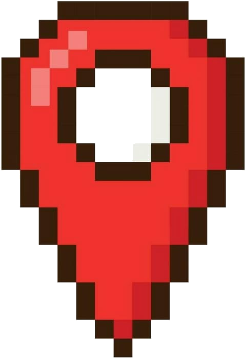
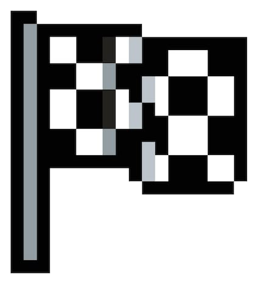
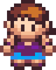
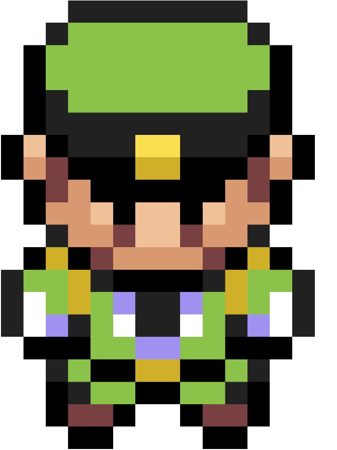
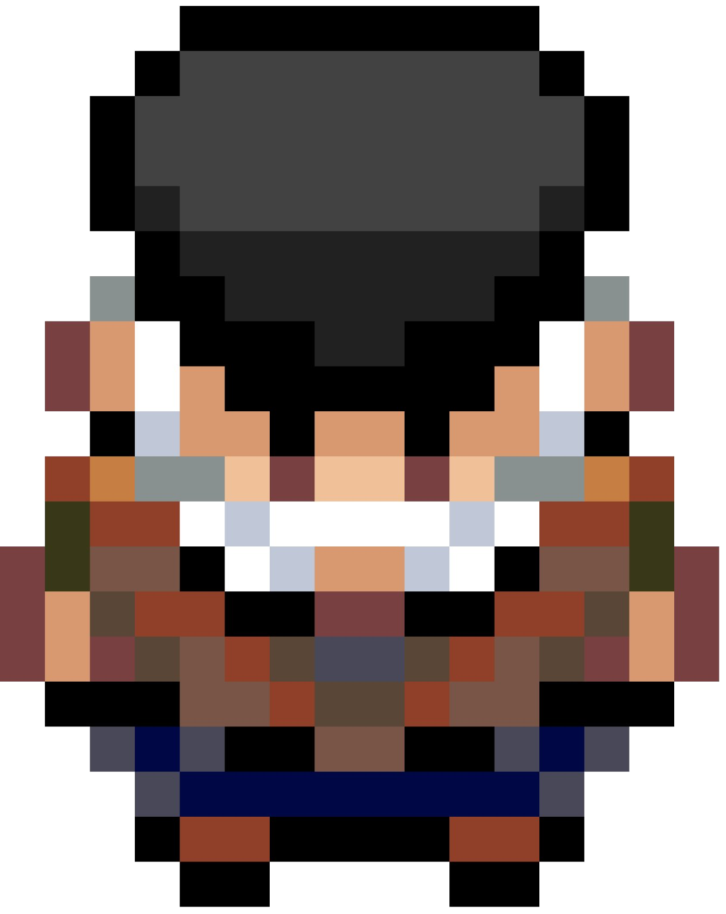
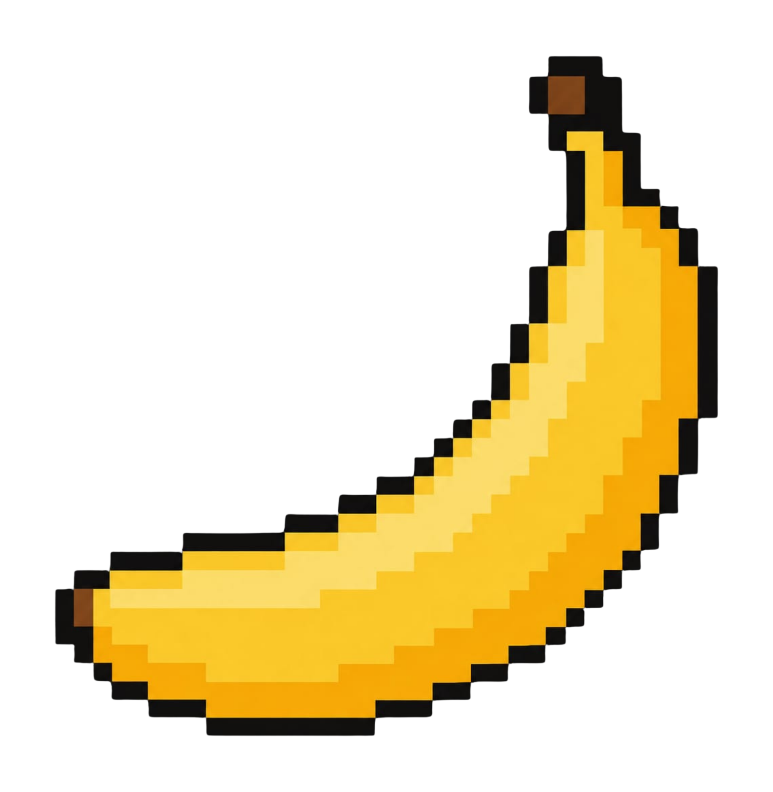
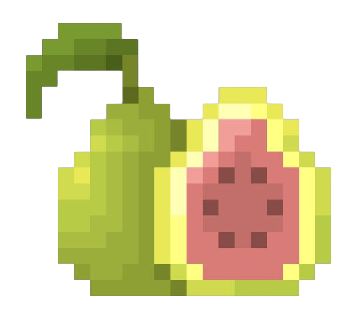
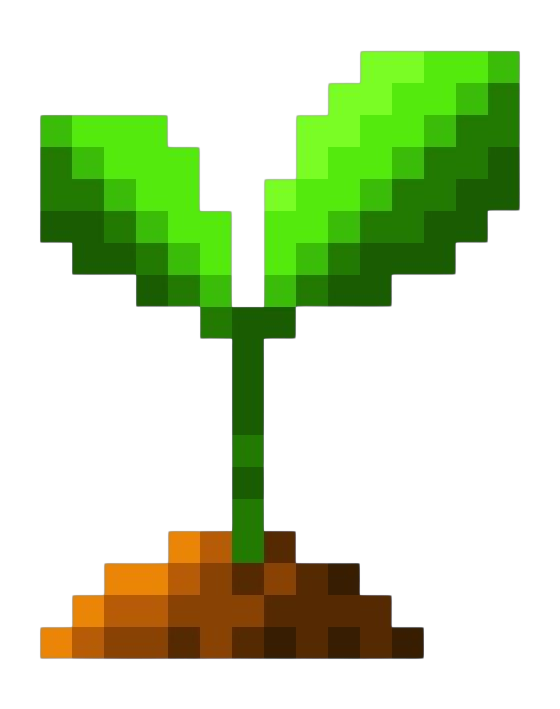
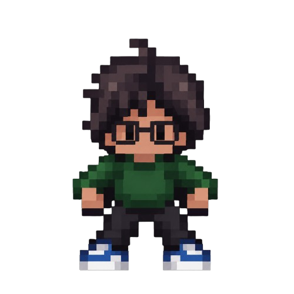
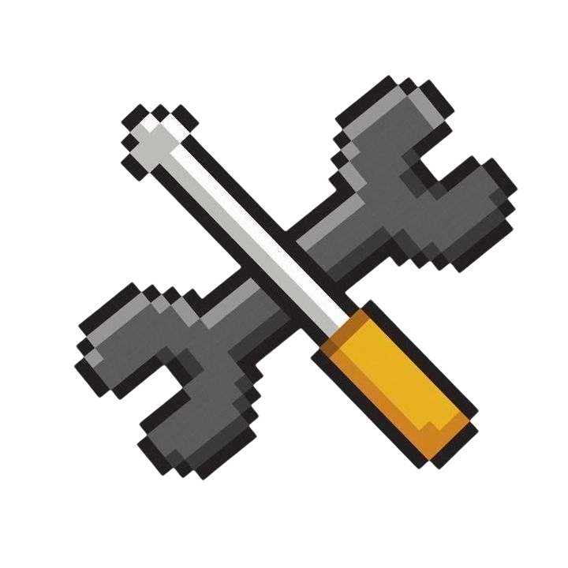

Moniquirá siente el peso
de la contaminación.
Ponte en los zapatos de Luz y cumple misiones por Moniquirá para cuidar su entorno y su gente. Cada decisión que tomes se refleja en cómo termina la historia.
Agua limpia
Ciudades sostenibles
Consumo responsable
Educación de calidad
Historia del videojuego

El punto de partida
Luz vuelve a Moniquirá después de un tiempo fuera y encuentra su ciudad contaminada. Es su hogar, y decide no quedarse quieta: hará algo para arreglarlo.

Un viaje que se transforma
Luz enfrenta la contaminación, los residuos regados y las decisiones de la comunidad. Cada acción del jugador va cambiando poco a poco el estado de Moniquirá.

El final depende de ti
No hay un solo final posible: lo que Luz rescata, limpia y decide en cada misión define qué tan recuperado termina quedando Moniquirá.

Inspirado en la realidad
Inspirada en la situación real de Moniquirá y en lugares reconocibles del municipio, contada como aventura para entenderla jugando.
Personajes

Luz
Protagonista del juego. Recorre Moniquirá cumpliendo cada misión para cuidar su municipio y su gente, tomando decisiones que definen su destino.

Cielo
Voluntaria que cuida el Parque Simón Bolívar desde hace años. Guía a Luz en su misión, compartiendo todo lo que sabe del lugar y de su gente.

Sergio
Patrullero de la plaza de mercado, experto en seguridad pero no en medio ambiente. Luz le ayuda a entender cómo cuidarla mejor entre los vecinos.

Wilson
Vive junto al puente Jaime Castro desde hace años y conoce cada rincón del río. Le enseña a Luz por qué cuidar el agua es tan importante para todo Moniquirá.
Misiones del videojuego

1. Parque Simón Bolívar
ODS 11El parque amanece cubierto de basura entre sus árboles. La misión de Luz es recorrerlo, recoger cada residuo y clasificarlo para devolverle su color.

2. Plaza de Mercado
ODS 12La plaza principal amanece llena de bolsas rotas y basura regada. Luz debe recorrerla, recoger cada residuo y clasificarlo para devolverle su color.

3. Puente Jaime Castro
ODS 6El puente y el río que corre bajo él están regados de basura de un lado a otro. Luz debe recorrerlo, recoger cada residuo y clasificarlo bien.

4. Fábrica de Bocadillo
ODS 12Detrás de la fábrica se amontonan los residuos de la producción de bocadillo. Luz debe recogerlos y clasificarlos bien para devolverle su color.

5. Moniquirá Renace
ODS 4Con todo recuperado, la misión final es recorrer Moniquirá completo y disfrutar el resultado: calles limpias y un pueblo que cuida su entorno.
Equipo

Sergio Villamil

Sharick Mendoza

Sevastian Guerrero
Ayuda
¿Cómo empiezo?
Ve a la sección Descargar, baja el instalador del juego a tu computador y ábrelo. Una vez dentro, Luz te va guiando paso a paso en cada misión: solo sigue las indicaciones en pantalla y explora Moniquirá.

¿Problemas para jugar?
Verifica que tengas Windows y espacio suficiente en tu equipo antes de instalar. Si el juego no abre o se traba en alguna misión, cierra y vuelve a abrirlo; si el problema sigue, escríbenos por nuestras redes.
Descargar Eco-Dulce
La versión completa del juego, lista para jugar en tu computador.
- Plataforma: Windows (.exe)
- Motor: RPG Maker XP
- Misiones: 5
- Peso estimado: por confirmar